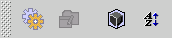
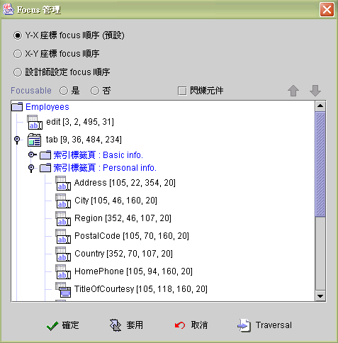

|
6.6 元件 Focus 管理 (Component focus management)
jLIVE Builder™ 提供三種 Focus 的管理機制，第一種是由左到右由上到下 (left to right, top to bottom) 以位置決定 Focus 順序 (Y-X focus order)。第二種是由上到下由左到右 (top to bottom, left to right) 以位置決定 Focus 順序 (X-Y focus order)。第三種是由設計師指定 Focus 順序 (developer defined order)。由設計師指定 Focus 順序時，新增元件的順序將會排序在最後，設計師可以進入 Focus 管理視窗按需求將其調整至適當順序。 預設的 Focus 順序是由左到右由上到下 (left to right, top to bottom) 以位置決定 Focus 順序 (Y-X focus order)，預設標籤元件( Label)、圖片元件 (Image)、導覽元件 (Navigator)、按鈕元件 (Button)、圖片引發器 (Image Invoker)、統計圖元件 (Chart)、計時器 (Timer)、條碼元件 (Barcode) 為不可 Focusable，除了標籤元件( Label)、導覽元件 (Navigator) 外，設計師可以進入 Focus 管理視窗將其設定為 Focusable。視窗在開啟後會將 Focus 調整至第一個可以 Focusable 的元件上。 Focus traversal 運用於檢視元件 Focus 順序，設計師於編列元件 Focus 順序後，按下 Traversal 按鈕後 Focus 管理視窗會暫時隱藏，設計視窗上的元件會依排定的 Focus 順序閃爍。 Focusable 通常運用於需要快速的以鍵盤輸入資料至元件中，所以將有此需求的元件按輸入資料順序予以排序，其餘元件則設定為不可 Focusable，按鈕元件則可以設定其易記鍵 (mnemonic)，讓使用者可以鍵盤啟動按下按鈕的事件。
按下 Focus 管理圖示按鈕，進入 Focus 管理視窗。

Copyright © 2001~ 2004 Probe Technology . All Rights Reserved. Questions, comments, and suggestions to Service@probe.com.tw |